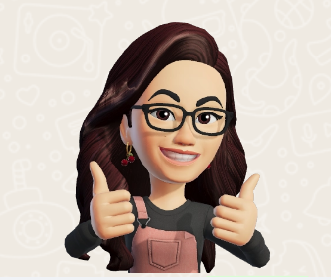

Yuvasri.P

SUMMARY
A highly motivated and hardworking individual And developing my skills nd knowlege in fullstack web developing.
EDUCATIONAL QUALIFICATION
- 2020 - 2023 Master of science in Mathematics at Bishop Heber College, Trichy with
81%
- 2018 - 2021 Bachelor of science in Mathematics at Bishop Heber College, Trichy with
82%.
- 2017 - 2018 Higher Secondary School Certificate in Sri Ramana Vidyalaya
,Rajapalayam.(State Board) with 82%.
- 2015 – 2016 Secondary School Leaving Certificate Sri Ramana Vidyalaya
Rajapalayam.(State Board) with 95%
INTERNSHIP
- Certificate of completion as consultant virtual experience at Accenture by Forage
- Completed Internship at Industrial Rubber Company. Kattur, Trichy
HOBBIES
- Floral wall painting.
- Reading self-help books.
- Listening Podcasts.
CONTACT
Contact me